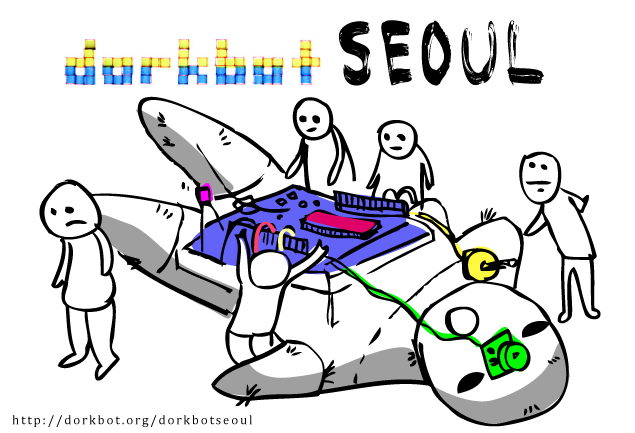

안녕하세요!
'도크봇 서울'은 전기를 사용해서 기이한 짓을 하는 사람들의 모임입니다. 우리는 D.I.Y 프로젝트, 뉴미디어 아트, 그리고
오픈소스 등 다양한 관심사를 갖고 있습니다. '도크봇 서울'은 취미가와 전문가의 경계 없이 오직 실력과 아이디어에 집중합니다.
우리는 정기 발표회 외에도 공동작업, 워크숍, 그리고 전시 등을 기획하며, 언제나 새로운 참가자들에게 열려 있습니다. 저희
행사의 소식은 본 사이트에 공지되며, 메일링 리스트를 통해서 토론과 정보를 공유에 참여하세요. '도크봇'은 전 세계 78개
도시에서 진행되는 국제적인 풀뿌리 네트워크입니다.
Hello world!
We are Dorkbot Seoul, a group of people doing strange things with
electricity. We are interested in D.I.Y project, new media art, and
opensource among other things. Dorkbot Seoul is about skill and ideas,
regardless a professional or a hobbyist. We are also planning
collaboration, public workshop, exhibition, and we are always open to
new people. News about upcoming events can be found in our website,
and also please sign in to our mailing list to take part in the
ongoing discussion. Dorkbot is an international grassroots community
in 78 cities in the world.
